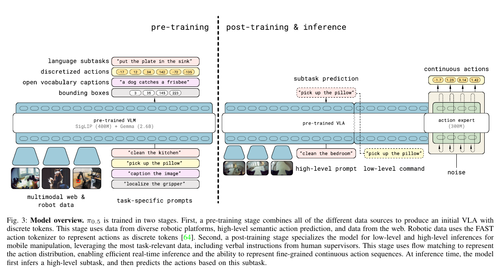
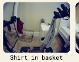
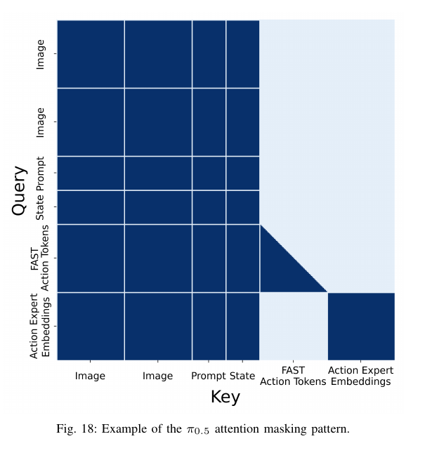
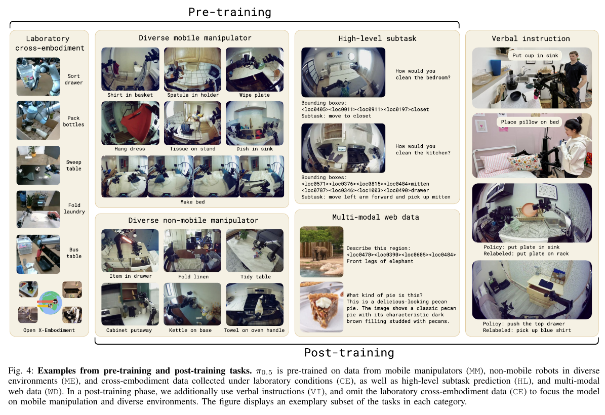
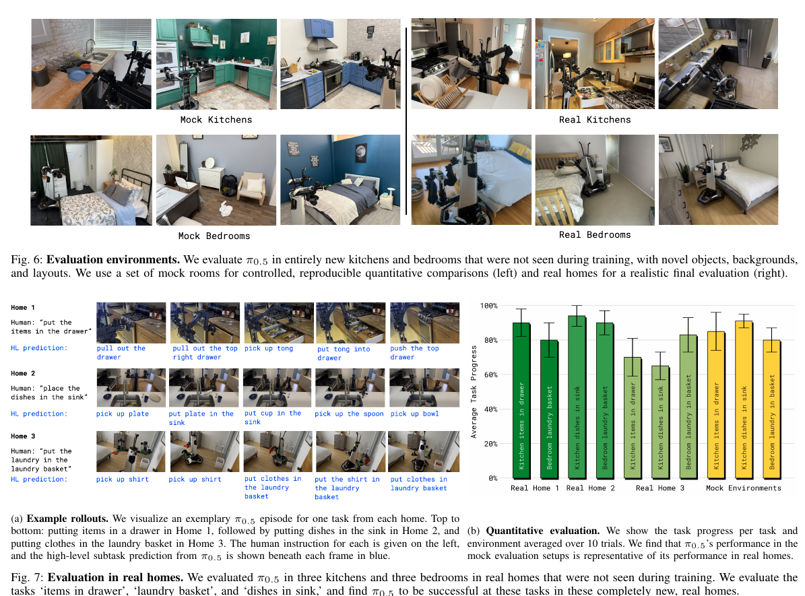
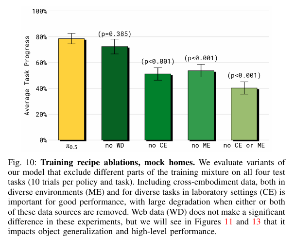
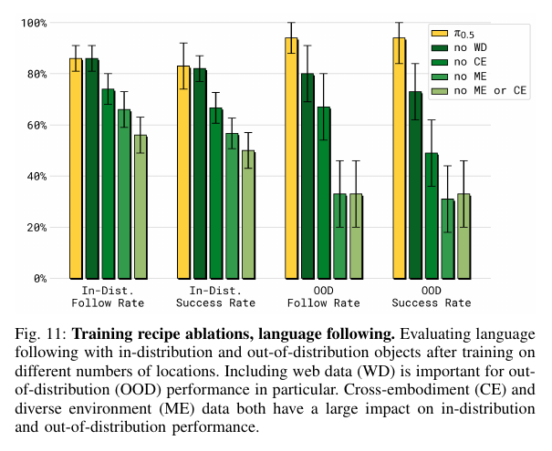
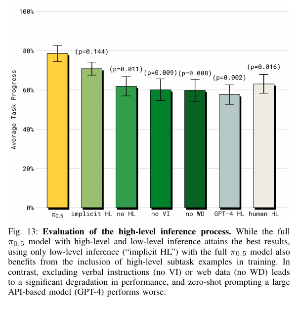

传感器 → 离散状态 qₜ
qₜ 是当前机器人的配置与速度，不是长期记忆；每次观测更新，进入下一次推理的前缀。
走进没见过的家，
把多种知识变成行动。
π0.5: a Vision-Language-Action Model with Open-World Generalization
Physical Intelligence · Kevin Black、Noah Brown 等
不只学“怎么抓”，
也学“现在该做什么”。
异构共同训练为同一个模型补充视觉、语言、子任务与其他机器人经验；分层推理把语义步骤交给连续动作专家执行。
非官方中文导读。原文事实、教学数值和未报告信息分别标明；正文与媒体均可离线阅读。
想象机器人第一次走进一间厨房。用户说“把餐具放进水槽”，它既要认出哪件是餐具，也要找到合适的抓法。π0.5 的主线是用不同来源的知识共同训练视觉语言动作模型（VLA），让语义判断与运动技能一起迁移到未见过的家。
推理流程教学重绘；箭头表示信息传递，末尾返回环境观测。高层更新频率低于低层；图中不表示两者一一同步。低层以子任务 ℓ̂ 为条件，不再直接以总目标 ℓ 为条件。

依据：PDF 第 4–5 页；详见 来源记录。
“融合”发生在带掩码的自注意力里。先把不同输入编码为向量序列，再规定每类 token 可以读取谁；不是把图像、文字和关节角直接相加。

原版 Fig. 4 局部；视角样例“把餐具放进水槽”分词 → embedding 矩阵 → 文字向量
或“拿起盘子”
[关节角、夹爪、升降、底盘速度]单个平台共 18 或 19 维
离散化 → 文本 tokens → embedding中文指令和 token 块数为教学示意，不是原始分词结果。高层使用前、后、双腕共 4 路相机；低层用前视与双腕共 3 路。图像分辨率、精确视觉 token 数以及统一填充后的最大动作维度，论文未在此给出。

附录 E：τ 经正弦编码与两层 MLP，再通过每层 adaptive RMSNorm 注入。带噪动作先单独线性投影。VLM 宽度 2048、深度 18；动作专家宽度 1024、MLP 维度 4096、约 300M 参数。这些不是视觉 token 数。
依据：PDF 第 19 页；详见 来源记录。
这里比较的是本篇实验中的 π0-FAST+Flow 与 π0.5，依据作者在 §V-D 的定义重绘；不把今日代码默认配置当作当年的实验设定。
同样采用混合训练配方，但没有 HL / WD 数据，也不能进行高层子任务推理。
增加 HL / WD 等监督，子任务文字成为低层条件。这有助于把“该拿什么”和“怎样拿”连接起来。
另一条差异在动作表示：预训练让真实动作 → FAST 离散 tokens → 下一 token 监督；后训练保留离散监督，同时加入带噪动作 → 动作专家 → 连续向量场监督；部署只为子任务自回归解码，低层用 10 步去噪生成。原版 π0 则从训练开始就使用动作专家。
Fig. 12 的模型接收相同跨机器人动作训练集、训练步数可比；π0.5 还有额外语义数据。因此结果不能单独归因于一个新模块。
依据：PDF 第 10 页；详见 来源记录。
先把真实动作 a 与高斯噪声 ω 混合，再让动作专家预测论文定义的方向 ω − a。下面只取动作块中一个归一化分量做演算，所有样例数值都是教学设定。
这是 Eq. (1) 的单样本简写；原式还对数据、τ 与 ω 求期望。H 是文字/FAST tokens 的交叉熵，和动作 horizon 中的 H 不是同一含义。后训练 α = 10，预训练 α = 0。
真实动作 a = 0.8；一次噪声样本 ω = −0.2。假设网络输出 fᵃ = −0.7。
若该位置正确离散 token 的预测概率为 0.5，其交叉熵为 −ln(0.5) ≈ 0.693；只保留这一个 token 和一个动作分量时，总示例损失为 0.693 + 0.9 = 1.593。反向传播据此更新共享 VLM 与动作专家参数；图像、状态等输入位置不是全都带有输出监督。
本文写 aτ,ω = τa + (1−τ)ω，却用 ω−a 作为向量场监督；它是上述插值对 τ 导数的相反数。这里严格沿用论文的损失符号，不把正向 Euler 更新公式擅自写成作者的采样代码。附录 E 给出偏向低 τ 的采样分布，s=0.999；这不是部署用 1000 步，正文明确部署为 10 步。
依据：PDF 第 19 页；详见 来源记录。
机器人物理运动的时间与模型内部去噪进度，必须分开看。前者单位是秒，后者是生成过程的归一化进度。
覆盖示意忽略推理延迟。50 个动作索引是 t 到 t+49，首末样本时间差为 0.98 秒，但 50 个控制区间共覆盖 1 秒。高层更新低于低层，具体频率、端到端推理毫秒数及异步调度均未报告。
依据：PDF 第 19 页；详见 来源记录。
约 400 小时移动操作数据只是配方的一部分：预训练中 97.6% 的样本来自其他来源。这个比例是训练样本占比，不能解读为机器人数据的小时占比。

| 来源 | 一个样本与监督 | 阶段与已知规模 |
|---|---|---|
| MM 移动操作 | 观测 + 命令 → 示范动作 | 约 400 小时，约 100 个家庭环境；两阶段 |
| ME 多环境静态机器人 | 其他机体观测 → 动作 | 两阶段；总小时数未报告 |
| CE 实验室跨机体 | 多机体多任务动作，含 OXE | 仅预训练；总规模未报告 |
| HL 子任务预测 | 观测 + 总任务 → 相关框 → 子任务文字；动作以子任务为条件 | 人工语义标注；后训练用多环境部分 |
| WD 网络多模态 | 图像 + 提问 → 答案 / 描述 / 定位框 | 两阶段；包括 COCO、CapsFusion、Cambrian-7M、PixMo、VQAv2 等 |
| VI 言语指导 | 人实时选择下一条子命令，指导已训练的低层策略 | 后训练；占高层移动操作样本约 11% |
动作按各数据集各维度的 1% / 99% 分位归一化到 [−1,1]，低维机体补零；提示中加入关节或末端控制模式。后训练动作轨迹筛选为成功且低于固定长度阈值的 episodes，阈值未报告。
上述是依据论文重建的样本类型，不是公开训练 pair。完整采样权重、batch、优化器、GPU 数量、训练墙钟时长与显存未报告；没有用当前官方代码补齐。部署不做在线参数学习。
依据：PDF 第 6–7 页；详见 来源记录。
依据：PDF 第 11 页；详见 来源记录。
论文支持“在训练没见过的家执行已训练任务类别”，不是证明机器人能完成任意新技能。定量评估中的任务进度也不等于整条任务全成功的比例。

| 任务 / 分母 | 怎样计分 | 教学计算 |
|---|---|---|
| 4 件餐具进水槽 / 8 分 | 每件拿起 +1，放入 +1 | 拿起 4 件、放好 2 件 → 6/8 = 75% 进度 |
| 物品入抽屉 / 4 分 | 拿起、打开、放入、关好各 +1 | 并非每得 1 分就是一次成功试验 |
| 衣物入篮 / 3 分 | 拿起、到篮上、完全入篮 | 步骤进度评分 |
| 整理床铺 / 5 分 | 毯子、两个枕头及整齐程度 | 具体 rubric 见附录 B |
标准比较通常每策略每任务 10 次、4 个任务共约 40 次；有因机器人故障、时间限制等取消的 episodes 被移除，附录称各组样本量保持接近，图中报告双侧 t 检验。真实家庭与 mock 环境共 12 个地点（3 个家庭的厨房/卧室与各 3 个 mock 房间）。


场景规模实验用 3、12、22、53、82、104 个地点；为控制比较，它先排除 MM 预训练，再各后训练 40k 步并控制所见独立样本数。这不是把完整 280k + 80k 配方简单重复六遍。趋势是地点越多，任务与语言泛化总体越好（Fig. 8–9）。

依据：PDF 第 8–11 页；详见 来源记录。
依据：PDF 第 17–18 页；详见 来源记录。
模型能适应新场景，也仍会受陌生把手、遮挡与子任务反复切换影响。有限上下文没有被证明能支持跨房间长期记忆；复杂偏好指令也受训练标注范围限制。
直接控制的优点是系统简单；实验没有额外轨迹规划或碰撞检测。论文的 open-world 是在这些平台、家庭场景和任务范围内的经验结果，不是对任意环境的安全或成功保证。
先读第 4 页 Fig. 3 和第 5 页 §IV-A/B；再看第 6–7 页数据配方；用第 19 页 Fig. 18 核对注意力。结果读第 8–11 页，评分与分母回第 17–18 页，失败条件在第 11 页讨论。
本地完整论文 PDF · 主张与来源映射 · 作者官方项目页（联网） · 官方代码（联网，当前版本不等于论文配置）
依据：PDF 第 11 页；详见 来源记录。